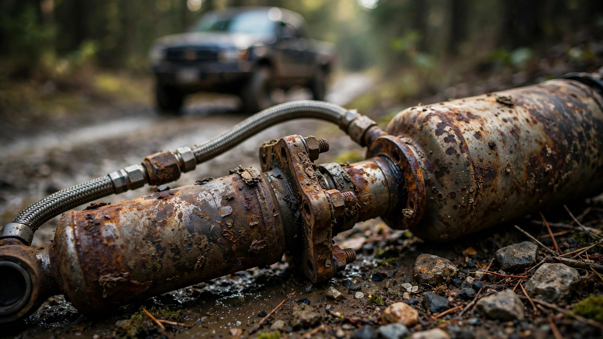

Bilstein's Off-Road Shocks Corrode From Going Off-Road. Two Automakers. Same Failure.

Toyota recalled 48,280 Tacoma TRD Off-Road trucks this month because the Bilstein remote-reservoir shock absorbers corrode and drop their oil reservoirs onto the highway.[1] Eighteen months earlier, Ford recalled 149,449 Broncos for the identical defect in the identical supplier's shocks: crevice corrosion at the mounting flange, reservoir separation, heavy metal debris at speed.[2]
Same supplier, same failure mode, same sales pitch about trail-ready durability. Bilstein's monotube remote-reservoir dampers are the upgrade that separates a mall-rated SUV from a trail-rated one, and both Ford and Toyota charge a trim-level premium to bolt them on: $44,970 for the Bronco Badlands, $39,445 for the Tacoma TRD Off-Road, each promising hardware engineered to handle water crossings, rock gardens, and fire roads where municipal salt trucks have never set tire.
The shocks corrode from exactly those conditions, because moisture trapped between the reservoir flange and the damper body initiates crevice corrosion that erodes the weld until the reservoir separates entirely. Ford's investigation found that the long-flange design was more susceptible than newer short-flange versions, which means Ford's own supplier audit identified the vulnerable geometry and the information existed before Toyota's Tacoma shipped with Bilstein monotubes welded the same way.[3] When the reservoir detaches, the shock loses all damping oil, ride control degrades, and the reservoir itself becomes a projectile for trailing traffic. Toyota's recall covers both front and rear assemblies; Ford's covered only rears, suggesting either broader exposure or a lower tolerance for risk after watching Ford go first.[4]
The Tacoma already carries a separate open recall for rear brake hoses that get chewed up by mud accumulation inside the rear wheels, covering 106,061 trucks from the same 2024-2025 model years.[5] That is two safety-critical off-road systems on the same truck failing from the off-road conditions printed on the brochure: shocks that rust from moisture exposure and brakes that leak from dirt ingestion. In FARS data covering 2014 through 2023, the Tacoma accounts for 2,274 occupant deaths at a fatality rate of 0.80 per 100 million vehicle miles traveled, roughly average for midsize pickups, but the rate calculation predates these recall-era model years where the truck's own suspension and braking hardware are degrading under marketed use.[6]
The fair counterargument: these are technically different shock absorber part numbers on different vehicle platforms, and crevice corrosion at dissimilar-metal weld joints is a well-understood metallurgical failure that two engineering teams could produce independently without a systemic supplier problem. But the timeline matters, because Ford's recall dropped in January 2025, with 551 warranty claims stretching back to March 2023. If Bilstein's root-cause analysis pointed to flange geometry, every OEM running Bilstein remote-reservoir shocks had eighteen months of public recall data to audit their own parts, and Toyota's Tacoma shocks shipped with the same architecture regardless. Recalls are supposed to be learning events, and nearly 200,000 vehicles suggest nobody learned.
If you own a 2024-2025 Tacoma TRD Off-Road or a 2021-2024 Bronco Badlands/Sasquatch: check your VIN at nhtsa.gov/recalls, watch for leaking shock fluid, unusual rear-end bounce, or rattling near the wheels, and get to a dealer for the free fix. Toyota owners can call 1-800-331-4331; Ford owners can reach 1-866-436-7332.
Sources & References
- Toyota Motor Corporation, “Toyota Recalls Certain Model Year 2024-2025 Tacoma Vehicles,” press release, August 6, 2026; NHTSA recall 26TB14/26TA14, 48,280 vehicles. nhtsa.gov
- NHTSA recall 25V025000, Ford Motor Company, 149,449 Bronco vehicles (MY2021-2024), rear shock absorbers may corrode resulting in external reservoir detachment, filed January 17, 2025. nhtsa.gov
- CarBuzz, “Ford Is Recalling Bronco SUVs With Bilstein Shock Absorbers,” January 2025, reporting Ford’s finding that long-flange shock absorbers were more prone to corrosion than newer short-flange designs. carbuzz.com
- Autoblog, “Toyota Recalls 48,000 Tacomas Over Shocks That Can Drop Parts on the Road,” August 8, 2026. autoblog.com
- NHTSA recall 25V058000, Toyota Motor Corporation, 106,061 Tacoma 4WD vehicles (MY2024-2025), rear brake hoses damaged by mud and dirt buildup, filed February 6, 2025. nhtsa.gov
- NHTSA Fatality Analysis Reporting System (FARS), 2014-2023: Toyota Tacoma, 2,274 occupant deaths, estimated rate 0.80 per 100M VMT, 19.4% driver impairment rate. nhtsa.gov